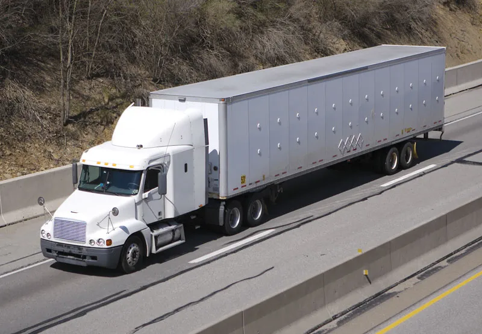
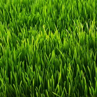

Semi
A semi-truck has two parts: a trailer, which carries cargo, and a tractor, which contains the engine. Notably, a semi-truck's tractor can detach from its trailer, and semi-trucks often travel without trailers. The terms 18-wheeler and tractor-trailer simply refer to a semi-truck and its trailer.

Green Grass
Grass is green because of the presence of chlorophyll throughout the leaves and stems. Chlorophyll is a pigment that allows plants to capture energy from the Sun in order to power the process of photosynthesis.Grass is green because of the presence of chlorophyll throughout the leaves and stems. Chlorophyll is a pigment that allows plants to capture energy from the Sun in order to power the process of photosynthesis.